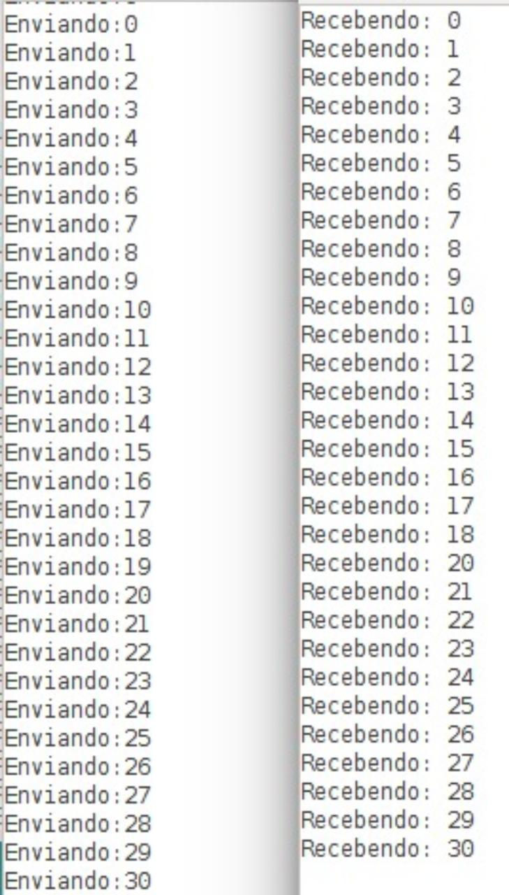

Estabilidade na comunicação entre os rádios NRF24L01.
Neste documento será relatado e demonstrado (através de imagens) o funcionamento da comunicação entre as estações remota e base através dos módulos NR24L01. A figura abaixo mostra através do terminal serial Arduino os dados sendo enviados e recebidos entre os módulos.
A figura mostrada está dividida em duas partes, a primeira, que presentada o módulo remoto, está um laço de repetição que incrementa uma variável do tipo inteiro a cada rodada e a envia para o módulo base. Por sua vez, a base está recebendo a variável incrementada.
O teste realizado se baseou em incrementar a variável 30 vezes e enviá-la ao outro módulo. É possível perceber que a transmissão ocorreu conforme esperado em quase todos os casos, exceto no incremento de número de 19 onde o ocorreu uma perda do dado. Ainda não foi detectado o porquê da perda.
Realizando contas rápidas, o sistema possui uma perda de dados de aproximadamente 3% o que é extremamente aceitável ao projeto visto que ocorrerá poucas transmissões ao decorrer do dia e com esta taxa de erro, o sistema funcionará plenamente.